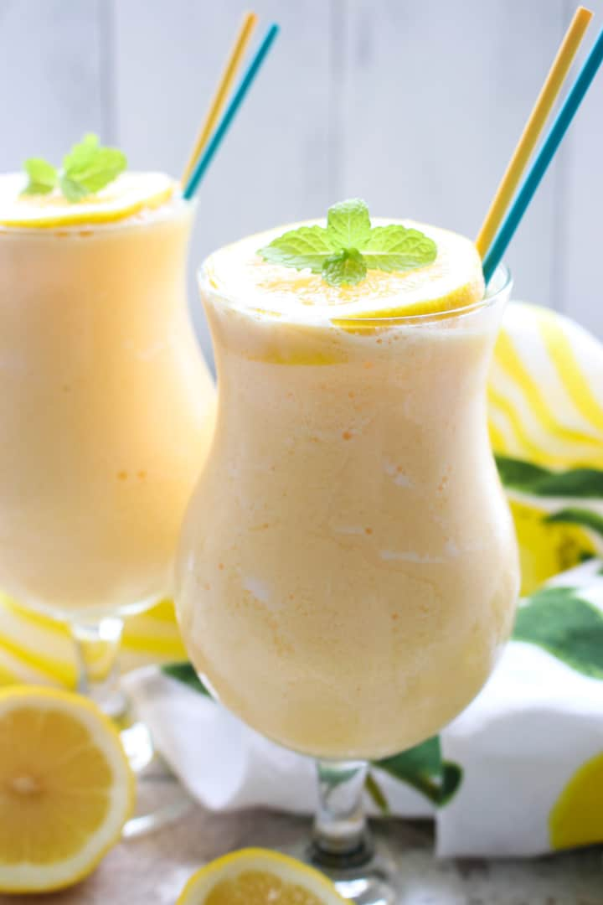

Whipped Lemonade
Ingredients:
Optional Ingredients
Steps:
-
Slice the lemons in half. Then, squeeze them over a mixing bowl to
collect the juice.
-
Remove any lemon pips from the juice, and pour it directly into
the blender.
-
Pour the heavy cream, condensed milk, and ice cubes into the
blender, and cover the blender with its lid.
- Blend the mixture on high for 15 seconds.
-
Pour the whipped lemonade into serving glasses, top it with spray
whipped cream, and add an optional lemon garnish on the glasses.